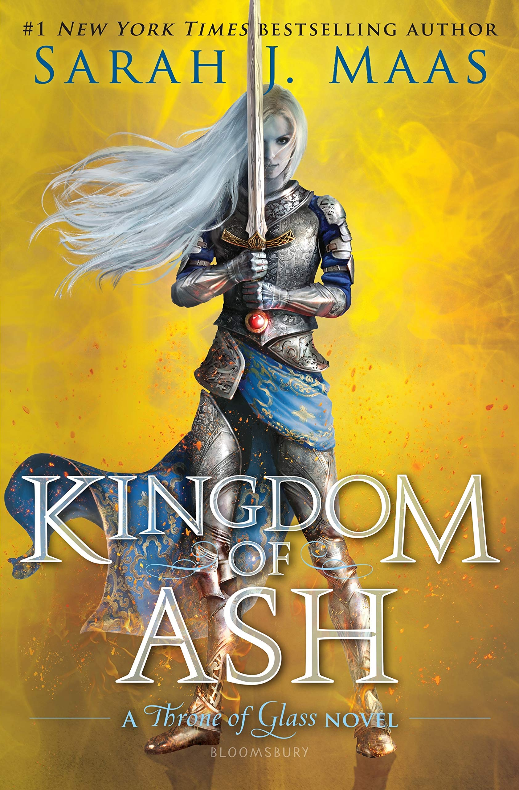

- 
-
Kingdom of Ash by Sarah J. Maas
Aelin has risked everything to save her people-but at a tremendous cost. Locked within an iron coffin by the Queen of the Fae, Aelin must draw upon her fiery will as she endures months of torture. Aware that yielding to Maeve will doom those she loves keeps her from breaking, though her resolve begins to unravel with each passing day… With Aelin captured, Aedion and Lysandra remain the last line of defense to protect Terrasen from utter destruction. Yet they soon realize that the many allies they've gathered to battle Erawan's hordes might not be enough to save them. Scattered across the continent and racing against time, Chaol, Manon, and Dorian are forced to forge their own paths to meet their fates. Hanging in the balance is any hope of salvation-and a better world. And across the sea, his companions unwavering beside him, Rowan hunts to find his captured wife and queen-before she is lost to him forever. As the threads of fate weave together at last, all must fight, if they are to have a chance at a future. Some bonds will grow even deeper, while others will be severed forever in the explosive final chapter of the Throne of Glass series.
-
Current Thoughts
I just finished this book and it was AMAZING!!! This has quickly become one of my favorite books. The character building is so good and Aelin, the main character, is the best main character I have ever read. She is absolutely astonishing with her depth and how she truly grows as a person through the books. The first 900 pages are so tense and suspenseful but the ending of the book is the perfect ending to the series. It completes it in such a full and satisfying way. I 10/10 recommend this book and would read the whole series just for this book.